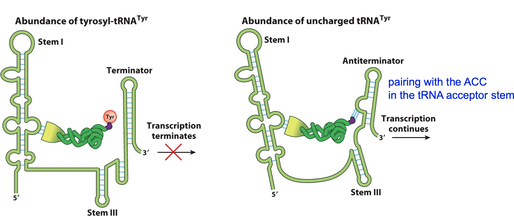

mRNA transcription isn’t perfect
The most deleterious mistakes in transcription result in premature or missing stop codons
How can we get rid of mRNAs that have premature or missing stop codons?
The ribosome displaces exon junction complexes during initial translation
Nonsense-mediated mRNA decay destroys eukaryotic mRNAs with premature stop codons
Upf1 and Upf2 recognize EJCs downstream of a stalled ribosome.
They recruit a decapping enzyme, which allows exonucleases to degrade the aberrant mRNA
Save the energy. Prevent ribosome further bind to the mRNA.
Non-stop mediated decay terminates eukaryotic translation when no stop codon exists
Ski7 recognizes stalled ribosomes at the end of a poly-K run.
The exosome degrades the mRNA 3’->5’
A protease recognizes the poly-K signal and degrades the protein
Gene Expression Regulation
Many ways to regulate gene expression
Questions for discussion:
- What stage of gene expression do you think is the most ENERGY-EFFICIENT mechanism for a cell to exercise regulatory control?
- Transcription
- What stage of gene expression do you think is the most RAPID mechanism for a cell to exercise regulatory control?
- Protein modification
Example 1: The trp operon - pre and post initiation regulation
Pre initiation
Logic: The bacteria need to transcribe the trp operon when they need to synthesize tryptophan
The trp operon is regulated by a Trp-binding repressor that blocks transcription initiation
Post initiation
- Low Trp levels: synthesize the full mRNA (all 5 biosynthetic genes)
- High Trp levels: only synthesize the beginning of the RNA (stop elongation)
The Trp operator encodes a leader peptide and can form multiple hairpins
3 possible hairpins can form
1 & 2 – doesn’t usually form
2 & 3 – anti-terminator
3 & 4 – transcriptional terminator
The logic behind attenuation (fine-tuning) at the Trp operon
Lots of Trp – ribosome moves quickly into region 2
This allows the 3-4 hairpin to form, which acts as a rho-independent terminator
RNA pol dissociates Leader peptide is degraded
The logic behind attenuation at the Trp operon
Low Trp – ribosome stalls at the Trp codons (not enough Trp-tRNATrp)
The 2-3 hairpin forms and acts as an anti-terminator RNA pol continues transcribing the Trp operon
Poll Everywhere analysis question:
How would initiation of transcription of the E. coli trp operon be affected if the Trp repressor was mutated so that it no longer binds to tryptophan?
- A. Transcription would always initiate
- B. Transcription would initiate only if tryptophan is present in low concentrations
- C. Transcription would initiateonly if tryptophan is present in high concentrations
- D. There would be no initiation of transcription
- E. There would be no change in initiation of transcription
Poll Everywhere analysis question:
How would transcription of the E. coli trp operon be affected if the Trp repressor was mutated so that it no longer binds to tryptophan AND the adenines downstream of region 4 were mutated to guanines?
- A. There would be no change in transcription
- B. There would be no transcription
- C. The operon would be constitutively expressed at high levels
- D. There would be low transcription if Trp was present in low concentrations
- E. There would be low transcription if Trp was present in high concentrations
The hairpin and polyU work together to stop the transcription.
Example 2: riboswitches Structures in 5’ UTRs of mRNAs that bind to small molecule metabolites
Regulation of transcription termination
Regulation of translation initiation
The tyrS riboswitch
Regulation of transcription elongation
Target: tyrosyl tRNA synthetase gene
Logic: transcribe when there is low Tyr-tRNATyr

The TPP riboswitch
Regulation of translation initiation
Target: thiamine biosynthesis regulatory gene
Logic: translate when TPP (thiamine pyrophosphate) levels are low